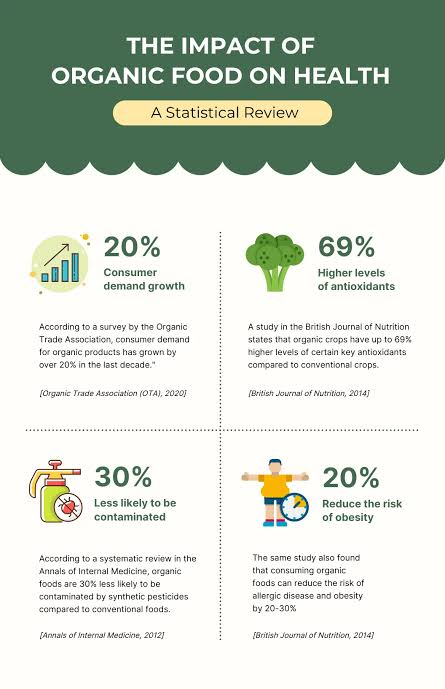

Advantages of organic foods to the consumers
Disadvantages of organic foods to he consumers

Appraisal on organic foods to the consumers
Advantages of organic foods to the producers
disadvantages of organic foods to the produsers
Appsaisal on organic food on produsers
Conclusion